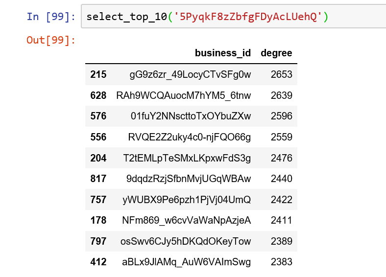

Our Project
My mom once arrived in Copenhagen, she had no idea where is good food. She looked up an App called Yelp and found a Chinese restaurant which is near Nørreport. When close to the dinner time, she looked up Yelp again, it recommended several restaurants for her. She went to the place which is a Danish restaurant and was very satisfied with what she ordered.She wants to know the logic behind these recommendations
-
Overall
Video
Because of the GDPR, we cannot get the data in Denmark from Yelp. So we have to use the data from Yelp America to construct our model. Without the limitation of GDPR, it’s possible to use our method in Denmark and other European countries as well.
Network

In our project, there will be a link between two restaurants when they are reviewed by the same person. If a restaurant has been reviewed by two different people, this restaurant will be connected with all the other restaurants that have reviewed by these two people.The distance between two different nodes is based on the longitude and latitude.
And the correlation between them is based on sentiment analysis, if there are more negative reviews for a restaurant, it means that the more negative correlation between this node and other linked nodes and vice versa.
Map
We have used Folium function to visualize the location of each business in Charlotte area. It shows below, left one is random users location map and right one is friendship users network map. It is easy to be found that random users map has more businesses in the city centre but in the friendship network most of businesses are in the south of the city.
-
Variables / Features
Variable Description business_id 22-character unique string user_id 22-character unique string(user indefication number) categories An array of strings of business categories is_open The status of each busniess latitude/longitude Location name Business name review_star Evaluation of review from each user restaurant_star Rating of each restaurant reviews Text evaluation from each user friend Friendship of each user -
Network
Random & Friend Network
In our network, each node represents a restaurant, a user can review several different restaurants and a restaurant can be reviewed by multiple users. For a restaurant, the more reviews it has, the higher degree it will have, the size of the node will become bigger.

As we can see from the plot in Random network, there is no clear cluster inside. Most of the restaurants are in the centre of the network with higher degrees than those on the edge of the network It is reasonable to say that the restaurants in the centre of network are located in the centre of Charlotte, and the restaurants with low degree are located in the rural area of Charlotte. Most of the people prefer visiting the restaurant around city area since more people live in the city than rural area.

The friend network is a little bit different from random network. There are some small clusters among the entire network, probably it is because a group of people(friends) are more likely to visit the restaurants in one specific area around their living place. It seems that the friend network is sparser than random network. But if we look into the density, the density in friend network is higher than it is in random network(0.28 vs 0.26).For instance, a family reunion has high network density, but a public bus has low network density. So it means that our friend network is not sparser than random network as you might see from the plot.
General Network measures


By plotting on a log-log scale, the review length distribution plots for random and friend network above show that both random and friend network are not Scale-free networks. However, regarding the random network, the regular plot shows that the degree will decrease whilst the number of nodes is decreasing. It is quite surprising that one fifth of the total restaurants have the degree around 500. From personal perspective, I assume that there are mainly two groups of people, and for each group, the people inside have lots of visited restaurants in common, Maybe it is the reason why the degree for these nodes is only around half of the highest degree.
Network plots
In this section we want to explore more differences between random network and friend network,by using node size to its degree, to eigenvector and to betweeness centrality.

The biggest one is node size porportional to its degree, the top right hand side one is the node size proportional to eigenvector centrality whilst the bottom right hand sidre one is node size proportional to betweeness centrality. The color for each node is based on its review count. The higher review count a restaurant has, the darker color it will have. The threshold are 25,50,75,100,150,200,400 and 600, based on the analysis from review count distribution we did secretly. In random network, there are lots of nodes in the centre of the network that have high view count. Obviously, they also have high degree, as we can see from their dark blue colors. A high eigenvector centrality for a given node, means that the node itself is connected to a lot of nodes with high scores. However, since there is not that big difference in terms of the node size for each node in this network, we can say that the nodes are connected without that much preference(since they are in random network and they are not person!). Since betweenness is based on how many times a node appear in a shortest path, the above result probably means that the restaurant nodes connect to each other a lot but is less connected to the rest of the network. From the plot for random network, we can infer that the higher review count a restaurant has, a higher betweenness centrality it will has.

In the left big plot for friend network, node size is proportional to its degree, since the number of restaurants and users are smaller than random network, the size of each node is also smaller than those in random network. It is quite obvious that the nodes are divided into three clusters. Probably it means there are three main groups of restaurants in which people usually visit? We will see a clearer answer in the community detection below. It is even more obvious that the nodes in friend network are divided into three big groups. The plot for eigenvector in friend network differs from the one in random network. The nodes with the biggest size are clustered together, middel size nodes are together and smallest nodes get together. We can infer that the people in friend network have their preference. They will visit the restaurant which are connected to a lot of other restaurants(nodes) with high degrees. Regarding the betweeness plot in friend network, it is quite obvious that some of the nodes in it is much bigger than the nodes in random network. It probably means that there is a group of restaurant nodes connect to each other a lot and also connect to the rest of the network.
Coummnity detection
In our network, each node represents a restaurant, a user can review several different restaurants and a restaurant can be reviewed by multiple users. For a restaurant, the more reviews it has, the higher degree it will have, the size of the node will become bigger.

As we can see from the community detection in random network, since it is called 'random', the community inside is quite trivial. There are lots of communities in this network. One thing that attracts me is the different colors(different communities) are located in 6 directions. I assume that it is based on different areas in Charlotte. People in different area are prone to visit different restaurants in different area

Compared with the community detection in random network above, the communities in friend network is more separate. Based on the analysis before, I can also assume that the different communities are divided by group of people or different area in Charlotte. Anyway, either different group of people or different areas is all related to people's choices, which is also the key proposition in our project.
Sentiment
Review Overview
Why do 4 /5 reviews have longer review text?

The review of random network and friend network have a little bit difference. In friend network the longest review length is in the four-star reviews, but in random network is five - star reviews. It is easy to understand that some would recommend good restaurant to other friends, that’s normally how friendship network works. There is a positive effect, if you have had a positive experience in a restaurant you will leave a positive review and recommend to your social circle who might not all share the common interests, but more than likely would also like this type of business, and this will keep the rippling through like a positive effect.
VADER
The VADER or ‘Valence Aware Dictionary and sentiment Reasoner’ method uses a sentiment and rule-based lexicon. Doing a VADER sentiment analysis on text results in a positive, negative, neutral, and compound score for the text piece. The compound score is the sum of the other three and gives an indication of the general attitude of the text. The score ranges from a negative response = -1 to a positive one = 1. The VADER scores are scaled so a score between 0.5 and 1 is considered positive, a score between -0.5 to 0.5 is considered neutral, and a score below -0.5 is considered negative (Zhou 2019)

We have chosen the top 3 degree highest restaurants, which means this 3 restaurant will have higher chance to be recommended. For higher rating reviews(4 and 5), these reviews are mainly gathering in positive area, but still have some five- star reviews have negative text. For the reviews left by patrons giving 4 or 5 ratings we clearly see that the majority of the reviews have positively loaded sentiment scores as evident by the lower quartile being well above the 0.5 mark.

It is surprising to see that in friendship network top 3 highest degree restaurants, there are no one - star reviews. It can be understood that if a user has been recommended a restaurant by a friend, which means even the restaurant has short length of reviews still have good reputation and high rates, which also means the recommendation list not only recommend most popular restaurant but also recommend less lower rating but from your friends have visited. There is only in total 25 pieces of reviews of top 3 highest degree restaurants, so it is insufficient to prove the correlation between each pair of features.
Boxplot
Are the high rating reviews all positve?


The box plot illustrates the connection between rating and review sentiment for random network(Left) and friend network(Right).The left plot shows the sentiment score for patrons who left a one-star rate. We see that the span of the sentiment score with one star rating are very wide. There are some reviews that obtained a positively loaded score, which is evident by the upper quartile being above 0.5.It is interesting to see that all the two-star rates are either positive reviews or neutral, which are in the interval of 0 to 0.8. The same phenomenon happens in friend network in three-star reviews. There are even a few outliers who seems extremely discontented in their written review with a VADER compound score well below -0.5, but still gives the restaurant a high rating.
In the left figure, there are a lot of outliers in four and five reviews, they occur more frequently for the random network considering the size difference between the samples of reviews from this two networks. When reviewers write neutrally or negatively even though they leave a high rating. Overall, we observed a tendency towards more similarities in sentiments in the reviews form random network and friend network. For the reviews left 4 or 5 ratings in left figure we clearly see that the majority of the reviews are positive.
Preference

In both random network and friend network, we have not carried out positive or negative classification. From the six word clouds, it can be seen that most users give positive reviews to the restaurant, such as ‘good’, ‘great’, and we can see that they also mentioned about the restaurant's name and categories, for example, ‘Amelie’,’burger’, ’sushi’.
Summary
Does the most popular restaurant have the highest degree?
Network Name Categories Degree Star Review_count Random Amélie's French Bakery & Café Restaurants, Coffee & Tea, Food, Cafes, Bakeries, Patisserie/Cake Shop, Breakfast & Brunch 2653 4.0 1566 Random The Cowfish Sushi Burger Bar 'Sushi Bars, Restaurants, Asian Fusion, Burgers 2639 4.0 1572 Random Pinky's Westside Grill Salad, American (Traditional), Restaurants, Burgers, Diners, Vegetarian 2596 4.0 991 Friend Trader Joe's 'Flowers & Gifts, Florists, Specialty Food, Beer, Wine & Spirits, Grocery, Food, Shopping 1095 4.5 167 Friend Diamond Restaurant 'Diners, American (New), Restaurants, Southern 1039 4.5 357 Friend The EpiCentre Shopping Centers, Bars, Restaurants, Nightlife, Shopping 1038 3.5 101 We can see that the list descends from top to bottom, in the random network and the friend network, respectively. From the random network, we can say that the answer is "YES", the higher the degree, the higher the review counts and the higher (four points) rating. But we can't get the same answer from the friend network. We see 'The Epicentre' which has the same degree as the 'Diamond Restaurant' (only 1 difference), but the former has far less reviews and ratings than the latter. From the friend network, the number one restaurant can also prove this, it has received 167 reviews, but his degree is much higher than the remaining two.
Finally, we defined a function that return the list includes top 10 restaurant with highest degree
©Copyright © 2019 Kaiyue Xu @ Wenhao Zhang